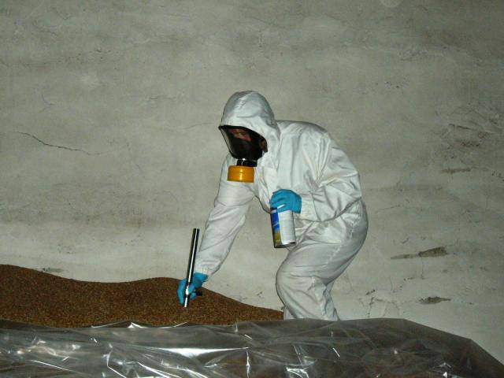

Що таке фумігація фосфіном?
Фумігація фосфіном — це процес обробки конструкцій за допомогою газоподібного фосфіну (PH₃), який є ефективним засобом боротьби зі шкідниками, такими як комахи, жуки, міль та гризуни.
Переваги використання фосфіну
- Висока ефективність проти широкого спектру шкідників.
- Глибоке проникнення в оброблювані матеріали.
- Швидка дія та короткий час експозиції.
- Не залишає залишкових речовин після провітрювання.
Процес фумігації
Фумігація фосфіном проводиться в закритих приміщеннях або камерах, де розпилюється газ для знищення шкідників. Процедура включає:
- Підготовку об'єкта до обробки.
- Герметизацію приміщення для запобігання витоку газу.
- Введення фосфіну та підтримання необхідної концентрації протягом визначеного часу.
- Провітрювання та контроль залишкової концентрації газу перед допуском людей.
Заходи безпеки
Фосфін є токсичним газом, тому під час фумігації необхідно дотримуватися суворих заходів безпеки:
- Використання спеціального захисного обладнання.
- Проведення робіт лише під керівництвом кваліфікованих фахівців.
- Забезпечення належної вентиляції після обробки.
- Контроль рівня залишкового газу перед поверненням до приміщення.

Процес фумігації фосфіном